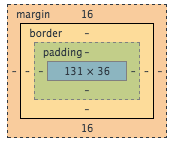

Tips for manipulating whitespace
Margins vs Paddings vs Borders
May 10th, 2015
When styling a website using CSS, one of the more common frustrations that beginners come across is positioning and managing whitespace between elements of a site. For example, how does one reduce the gap between the image and its caption. Enter CSS box model.
CSS box model defines the layers of whitespace that surrounds the actual content.

Padding is the space immediately around the content and the border goes around the padding and content. The border is often leveraged to visually box or create a "border" around an element. The border and padding can be adjust to be as thick or thin as suitable. Lastly, the margin is the area outside of the border and is useful for creating space between one element and the next. All in all, the combination of the three properties contribute to the whitespace surrounding an element. Next we'll look at how to manipulate these properties.In the image below, you see that the texts are really close to edges.

To increase the space between the texts and the edges, you input the highlighted code in the image below.

Looks like the padding around the text made the overall boxes bigger and now the boxes are touching. To create space between the boxes, you add margin.

What if you want to make a border around the box about cats?

With the three properties, you can move elements of a webpage around and create more visually appealing websites.
Latest Tweet
tweet tweet
Social
FB Twitter GitHub LinkedIn Google+